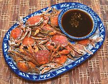

|
Tiny Crispy CrabsPhilippines / Southeast Asia - Talangka | ||||
| Makes: Effort: Sched: DoAhead: |
6 app ** 45 min Yes |
These simple fried Southeast Asian crabs are popular in the region, sometimes called "Crab Popcorn". The crabs are available frozen in Asian markets, and as a live invasive in northeast US. | |||
|
|
14 2 1/3 1 2/3 ------ ar ------ ar |
oz T T t c --- --- |
Tiny Crabs (1) Gin - or (2) Salt Pepper, Black Cornstarch ---------- Oil, deep fry -- Serve with Dip of choice (3) |
Prep (15 min)
|